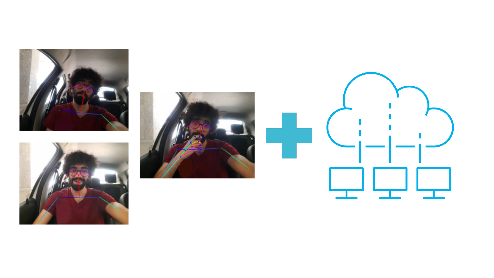

Software/Hardware co-design | Supervisor: Prof. Nazari
Built an image histogram equalizer module using High-Level Synthesis (HLS) and implemented it on a ZedBoard.
RAISeLab, Pennsylvania State University
Designed and developed a back-support active exoskeleton employing multiple IMU and EMG sensors
for enhanced worker safety during heavy object handling. Utilized Dynamixel motors for efficient and controlled assistance.

Pose Estimation with CNN for Driver’s Awareness in Connected Cars
BSc. Thesis | Supervisor: Prof. Moaiyeri
Fine-tuned pose estimation convolutional neural networks (OpenPose and UniPose) with a custom dataset to classify driver’s awareness in connected cars.
Developed a system that recommends movies based on user ratings and similarities with other users. Programmed as a CLI app in C++.

Hand Gesture Detection
Implemented a hand gesture detection system using Google’s Mediapipe package for hand key points extraction.
The ESP32-Cam captures and sends frames, which are inferred by a custom neural network model for gesture recognition.
Results are sent to the ESP32 microcontroller via UDP protocol.
Developed a genetic algorithm to generate the famous Alan Turing image from random pixels, using selection,
simultaneous crossover, and enhanced adaptive mutation techniques.
Web Scraping of a Product Page
Created a Python project using BeautifulSoup4 to scrape promoted products, discounts, and prices from a product page.
Developed a washing machine prototype using an ATmega32 microcontroller with a PID-controlled heater,
Servo motor, multiple DC motors, an LCD display, and an intuitive user interface.
Implemented a Sobel edge detector filter using VHDL. Input images were converted to binary,
convolved with a Sobel kernel, and output images were processed and reconstructed with MATLAB.

PD-Controller Ball Balancer
Created a ball balancer integrating a PD-controller to balance a ping-pong ball on a plane.
The ESP8266 microcontroller sends and receives data from a custom website to control the Servo motor.